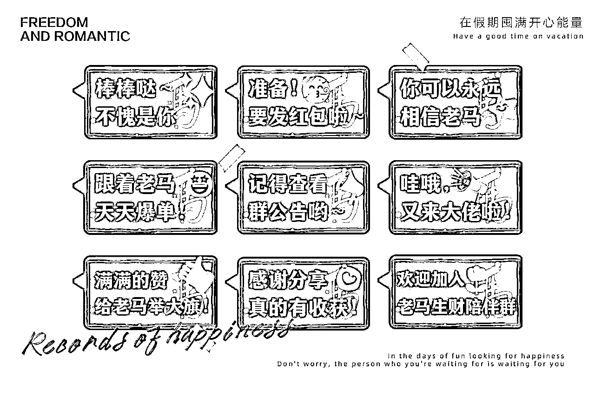

来源：https://ys5n5rzrv4.feishu.cn/docx/I01Md03OHou3MHxAAtHczufLn2b
之前小马宋老师预测未来5年出现更多超级个体，个人IP化已形成趋势。
未来每个人都可能拥有自己的IP和社群，强烈建议每个自媒体人可以在自己的社群设计一套社群表情包。
千万不要小看表情包，它传递的是一种文化，就像是企业文化。
第一：它能够凝聚社群人心，当大家都自发地用社群表情包进行发言都时候，一定是对社群对IP产生了归属感和认同感。
第二：表情包可以在群内进行传播，也很容易破圈，带来更多的影响力。
大家只看操作方法就好
https://www.canva.cn
形状可以适当圆角下，不要那么生硬，在【填色】旁边的【三横杠】图标下调整
比如【老马生财陪伴群】高频出现的有以下几种情况：
新人入群的场景：便可以把“欢迎加入老马生财陪伴群”制作成表情包
老马日常分享的场景：觉得老马说的很有道理，便可以把“满满的赞，给老马举大旗”做成表情包
嘉宾日常分享的场景：觉得嘉宾说的对你太有帮助了，便可以把“感谢分享，真的很有收获”做成表情包
群主要给大家发红包/福利的场景：想提前预告，便可以把“准备，要发红包啦～”做成表情包
跟着老马赚到钱的时候：觉得老马的分享激励人心，跟着老马有钱赚，便可以把“跟着老马，天天爆单”做成表情包
我给老马设计的“十年之约，一起成长”便是使用字由点字简宋，字体在画布左上角可以进行替换，多种免费字体可以去自由选择
自从加入老马的十年合伙人，很喜欢老马的社群陪伴氛围，已经有了归属感，一直想为社群做些什么。
想起自己身为资深设计师，倒是可以在这方面发挥一点价值，于是自告奋勇给老马设计了一套文化表情包，也收获了一些人的认可，在此非常感谢老马、感谢大家的支持！
